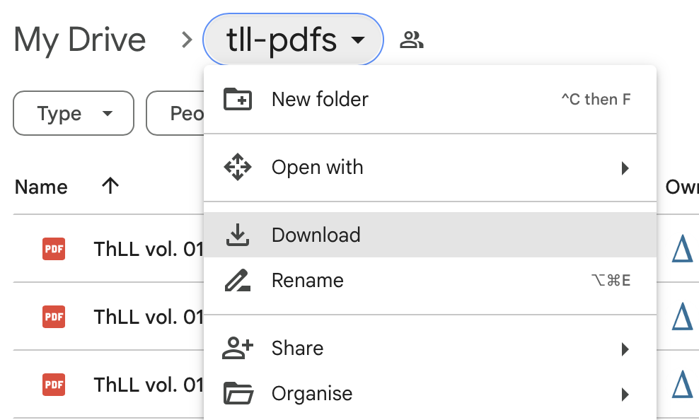

The Bayerische Akademie der Wissenschaften has generously made the PDFs of the TLL (apart from the most recent fascicles) available for download from its website under an open access license (CC BY-ND-ND). Diogenes includes links to the correct page of the correct PDF for each Latin word it encounters.
The BAdW originally stated a preference for users to download the PDFs from its own website, even though the license permits free redistribution. Accordingly, earlier versions of Diogenes included a script that downloaded each of the 58 fascicles from the BAdW website.
That script proved impossible to maintain, as the PDF files were moved to different locations on the BAdW website, had their names changed, and finally were moved to secure (https) URLs. The request to download the files directly from the BAdW seems to have disappeared from its website, so I am providing here a link to a Google Drive folder containing the PDFs, as permitted by the license.
When you click on the link above, you will be taken to a Google Drive folder containing the PDFs. This may show a “Download All” link, which you should click.
Alternatively, you may have to click on the downward-pointing arrow next to the “tll-pdfs” heading and look for the “Download” option in a menu as shown below. This should permit you to download all the PDF files with one click.

Google Drive first zips the files together (over 6GB in total), and this may take some time. It may then split the download into several zip files. If so, the zip files begin to download simultaneously. When all of them have downloaded, go to your Downloads folder and unzip each file.
If you were given one zip file, unzip it and move on to the next step. Otherwise, you now have several folders and you must merge the PDF contents into one single folder. When unzipping, you may have been given the option to merge the contents of the unzipped files together into a single folder called “tll-pdfs”. If so, all of your PDF files are in a single folder and you can move on to the next step.
Otherwise, you may have several separate (usually numbered) folders with the contents of each zip file. In this case, you need to carefully copy the PDFs in each folder into a single folder containing all of the PDFs.
Make sure you end up with one folder containing all of the PDFs directly, not one folder containing several folders which each contain some of the PDFs.
Move the single folder with all of the TLL PDFs to some convenient location on your computer. Go back to Diogenes and indicate the location of that folder via the File menu: Set Folder Locations.